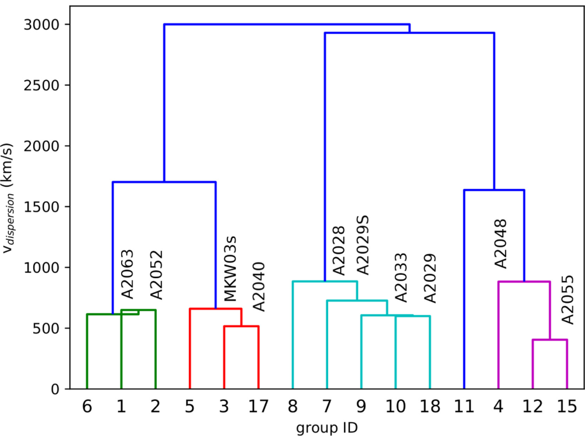
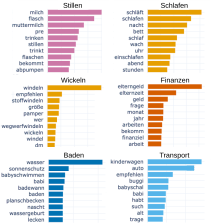
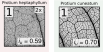
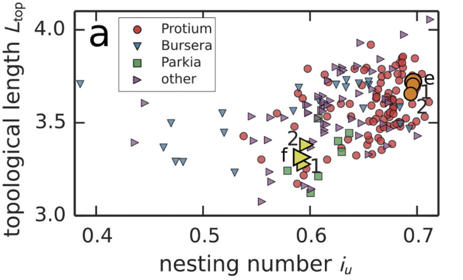

Vorlesung 3: Zusammenfassung
unüberwachtes Lernen
unüberwachtes Lernen


Astronomie: Detektion von Galaxienhaufen
- Frage: Was ist die intrinsische Struktur von Galaxienhaufen?
- Herangehensweise:
- Gruppierung von Galaxien in Galaxienhaufen in einer gegebenen Himmelsregion mit einem hierarchischen Clustering-Algorithmus.
- Spezielle Distanzmetrik (Bindungsenergie) die Verbindungen zwischen Galaxien beschreibt.
- Resultat: Hierarchische Struktur (Dendogramm) der Galaxienhaufen.


Galaxiehaufen die in der Himmelsregion nahe Supercluster A2029 entdeckt wurden. Quelle: Yu & Hou, Hierarchical clusterin in astronomy, Astronomy and Computing (2022).
Soziologie: Probleme junger Mütter
- Frage: Welche Themen beschäftigen junge Mütter besonders?
- Herangehensweise:
- Identifikation von relevanten öffentlichen Gruppen auf Facebook mit Hilfe von Schlagworten und Expert:innen.
- Sammeln von 840.000 Posts.
- Identifikation von Themen mittels Textkategorisierung (Topic Modelling).
- Resultat: Klar abgegrenze und interpretierbare Themen.
- Nutzung: vom Verein zur Förderung von Kinderschutz und Kindergesundheit in Österreich zur Entwicklung einer neuen Informationsbroschüre.

Themen, die von Jungen Müttern auf Facebook diskutiert werden.
Projektarbeit von Magdalena Fritz.
Projektarbeit von Magdalena Fritz.
Biologie: Charakteristika von Pflanzenblättern
- Frage: Können wir Informationen aus den Transportnetzwerken von Pflanzenblättern verwenden, um verschiedene Spezies zu unterscheiden?
- Herangehensweise:
- Extraktion von Transportnetzwerken und Messung von Charakteristika der Netzwerke (Topologie) und geometrischen Charakteristika.
- Clustering von Pflanzenblättern anhand der Charakteristika & Dimensionsreduktion.
- Resultate:
- Die Netzwerkstruktur enhält Informationen die in der geometrischen Struktur nicht enthalten sind.
- Die PCA zeigt deutlich, dass Geometrie und Topologie unterschiedliche Dimensionen abdecken.



Quelle: Ronellenfitsch et al., Topological Phenotypes Constitute a New Dimension in the Phenotypic Space of Leaf Venation Networks, PLoS Comp. Biol. (2015).
Zusammenfassung
- Mit Clusteranalyse bzw. unüberwachtem Lernen können wir unbekannte Muster in Daten entdecken und ähnliche Beobachtungen in Gruppen zusammenfassen.
- Um Ähnlichkeiten zwischen Beobachtungen zu charakterisieren, brauchen wir ein Distanzmaß wie z.B. die euklidische Distanz oder die Kosinus-Ähnlichkeit.
- Haben unsere Daten zu viele Attribute ist es sinnvoll, Dimensionsreduktion wie z.B. Hauptkomponentenanalyse (PCA) anzuwenden, um die Attribute auf das Wesentliche zu reduzieren.
- Es gibt unterschiedliche Algorithmen für unüberwachtes Lernen wie z.B. hierarchisches Clustering, K-means und dichte-basiertes Clustering.